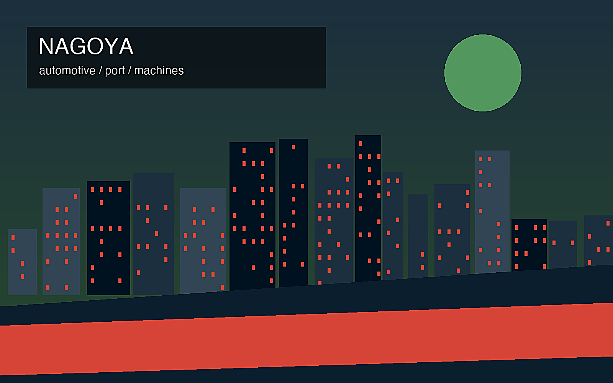
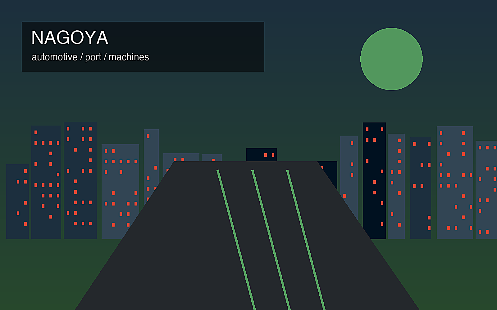

地政学
東京と大阪の中間にあり、名古屋港と内陸工業地帯が太平洋ベルトを支える。

🇯🇵 日本 / アジア / World City Atlas
ものづくり日本の中核都市圏。世界都市として、経済規模だけでなく、地理、産業、宗教文化、暮らし、観光を分けて読みます。
都市の骨格
東京と大阪の中間にあり、名古屋港と内陸工業地帯が太平洋ベルトを支える。

東京と大阪の中間にあり、名古屋港と内陸工業地帯が太平洋ベルトを支える。
自動車、部品、工作機械、航空宇宙、セラミックスが強く、高度な分業を形成する。
熱田神宮、大須観音、城下町の記憶があり、工業都市の中に古い信仰空間が残る。
名駅、栄、大須、名古屋城、産業博物館、喫茶文化が都市の個性を作る。
Geography
都市の経済力は、地図上の位置、港湾、鉄道、空港、河川、周辺都市との関係から生まれます。
東京と大阪の中間にあり、名古屋港と内陸工業地帯が太平洋ベルトを支える。
名古屋を単体の市街地としてではなく、周辺の住宅地、産業地、物流施設、教育機関と接続した都市圏として見ると、GDPの大きさが日々の通勤、土地利用、観光、文化施設の配置にどう表れているかが分かります。
自動車、部品、工作機械、航空宇宙、セラミックスが強く、高度な分業を形成する。
この都市では、華やかな中心業務地区の背後に、清掃、建設、配送、調理、介護、教育、保守、警備といった日常的な労働があります。都市の経済規模を見るときは、数字だけでなく、その数字を支える人と場所を同時に見る必要があります。
Industry
主力産業だけでなく、周辺の小さな仕事が都市を毎日動かしています。
Culture
宗教施設、祭礼、市場、劇場、大学、移民地区は、都市の経済とは別の時間を保存します。
熱田神宮、大須観音、城下町の記憶があり、工業都市の中に古い信仰空間が残る。
名駅、栄、大須、名古屋城、産業博物館、喫茶文化が都市の個性を作る。